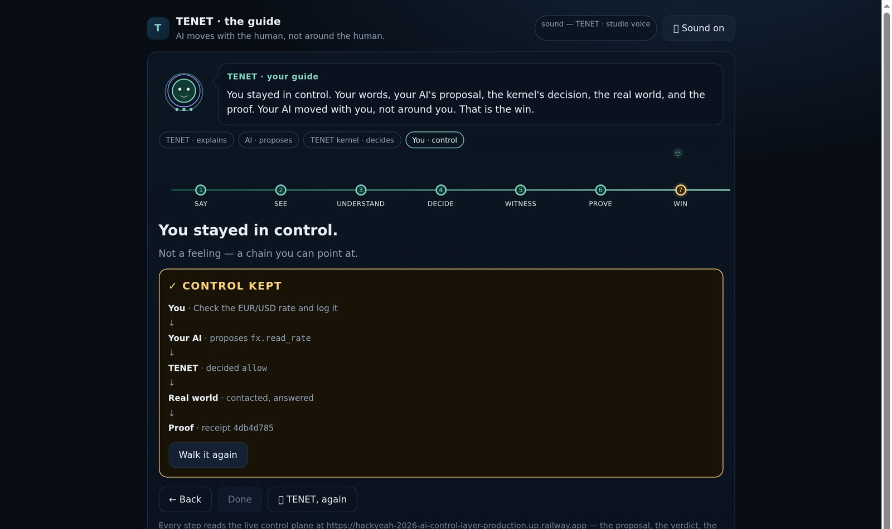

TENET
AI actions you can take back — before they leave.
One rule, enforced before execution: no approval, no action. Every tool-call carries an order that expires, and a receipt that proves it.
An AI agent calls crm.bulk_export with {email, pesel}. It holds a password, not an order. Nobody is awake to stop it.
Every tool-call passes the kernel before it executes: scope, TTL, signer. One click takes the authority back — and the agent stops mid-flight, not after the export.
Embedding it is one hop: POST /mcp in front of the existing tool server — no rewrite of the agent, no rewrite of the tools.

| what | how | status |
|---|---|---|
| unit sold | one node = one tool server | built — measured |
| metering | per authorized action + receipt | built — measured |
| time to embed | 1 endpoint · ~2 weeks | estimate from the architecture |
| price / ARPA | hypothesis, not an invoice | not claimed — no paid customer |
| who signs | infosec lead / DPO under DORA | hypothesis |
| layer | number | where it comes from |
|---|---|---|
| in scope of DORA (EU) | 22,000+ entities & ICT providers | published count, 2026 |
| the slice we can reach | firms whose agents already touch customer data | not claimed — no survey run |
| unit of sale | 1 node = 1 tool server | built |
| arithmetic | nodes × price per node | conditional — price untested |
| what firms use today | what it does well | what it cannot do |
|---|---|---|
| logs / SIEM | proves what happened | never authorizes, never stops — evidence after the fact |
| IAM / PAM | binds identity to systems | an agent borrowing a human’s identity carries no intent |
| human-in-the-loop chat | a human double-checks | approval without expiry or revoke; one click cannot halt the run |
| doing nothing | cheap today | the real competitor — and the one the regulator is closing |